回饋佛國
弘法利生
佛陀的故鄉，孩子們怎樣上學？

先別急著下結論，讀完再說說你的想法～
這一篇講雪隆志工從2022年起走進尼泊爾藍毘尼：發書包冬衣、勸輟學的孩子回學校，再把靜思語、奉茶、米撲滿帶進校園。
最後，你會看到當地老師穿上教聯會制服，和志工一起「翻轉藍毘尼」。
下面是原書的節錄，紅色底線是我們替你標出的轉折點。
讀之前：你覺得要改變一個貧窮的地方，最重要的是什麼？
塑膠袋當書包
藍毘尼的學校缺什麼？孩子怎樣走去學校？閱讀引導
但學校一般設備簡陋、師資缺乏、學生多數來自困苦的家庭，不少教師們課後仍須負擔許多勞務，如顧店、務農等等。
冬天沒有足夠的保暖衣服，多是赤著腳或穿著拖鞋，手裡拎著充作書包的塑膠袋前往學校。有的學生還要背著年幼的弟妹到學校……

還背著弟弟妹妹。
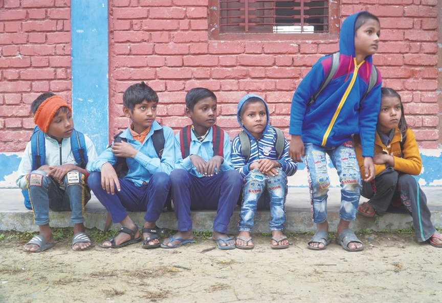
成就了第一梯次的學生物資發放，其中包含書包、冬衣、鞋襪、字典和文具用品等，嘉惠超過兩千名清寒學生。
「尼泊爾政府未能做到的，慈濟已經做到了，由衷感謝慈濟基金會。」
藍毘尼市長沙加魯丁表示・p.300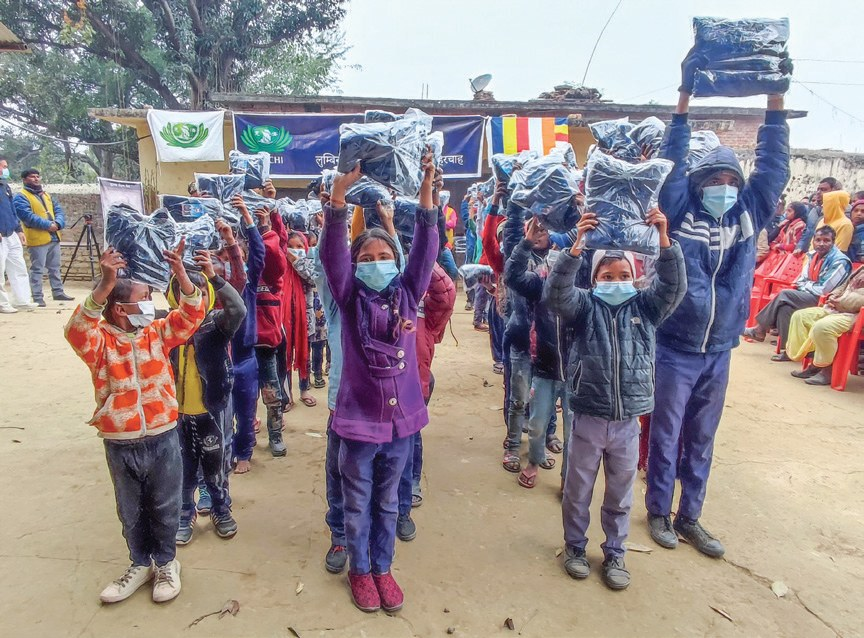
截至2023年1月，慈濟與二十八所藍毘尼的公立學校結下好因緣，發放文具、書包、冬衣等物資，嘉惠一萬一千多名學生。

一萬一千多個孩子！
教育不能等
每三個孩子就有兩個離開學校，志工怎樣把他們找回來？閱讀引導
猜一猜閱讀引導
2021年的報導說，尼泊爾孩子能讀到十二年級的比例是多少？
公立學校在11年級後需要收費，所以每三個孩子之中，就有兩位被迫離開校園，負擔家庭生計。

兩個要離開學校……
與當地十所學校的教職人員攜手家訪，與家長溝通，說明慈濟能給予補助，爭取孩子重返校園讀書的機會。
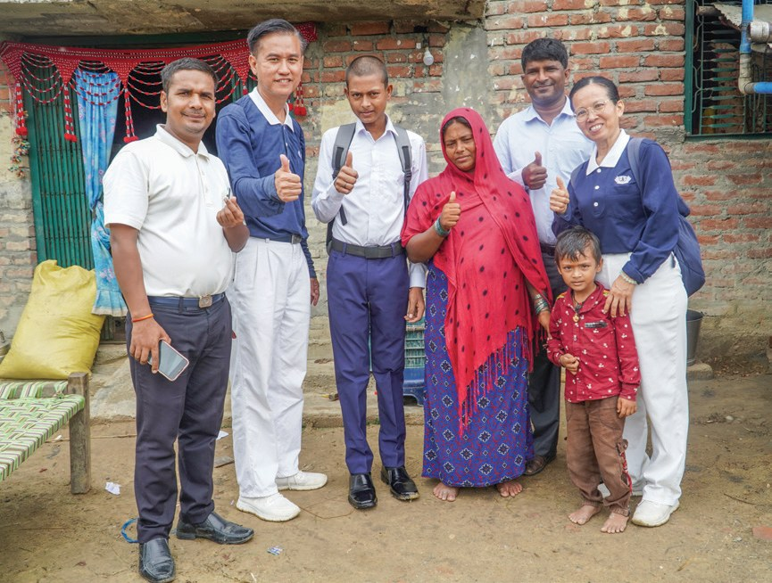
19 歲的輟學生索娜姆原本以為完成基礎教育後，宿命就是幫忙家務，從沒想過還有機會求學。
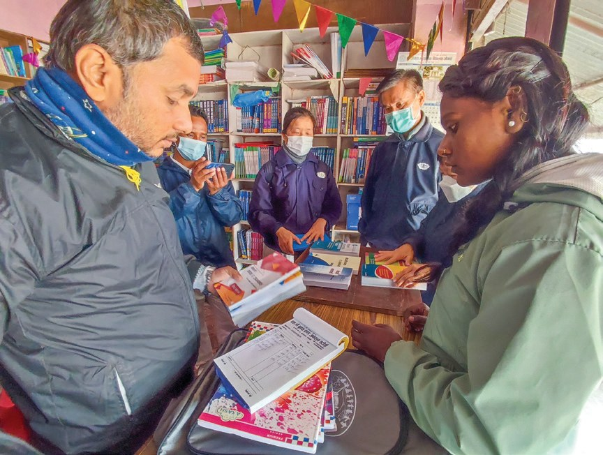
直到放榜後，確認她能夠進入庫達巴卡學院，才讓她的心安定下來。
慈濟支助她全年的學費、雜費與課本，使她能踏上夢寐以求的升學之路。
「畢業後我想找份好的工作，去幫助像我一樣貧窮的人，也希望我有能力讓兩個妹妹繼續求學，好好地念書，將來我們的家庭情況就能改善。」
索娜姆說・p.302想去幫助別人！
慈濟人深信教育不能等，因為這將是孩子生命中的轉折……
一杯茶，一把米
奉茶、米撲滿、跪羊圖、靜思語，校園有什麼改變？閱讀引導
為了灌輸學生與老師們「行善行孝不能等」的理念，志工也積極在校園推動一系列尊師重道的活動，包括浴足、奉茶，還有日存一把米。
在各方的努力之下，已經成功接引十所學校參與，從中也啟發了十九位當地老師加入教聯會，成為第一批種子教師。
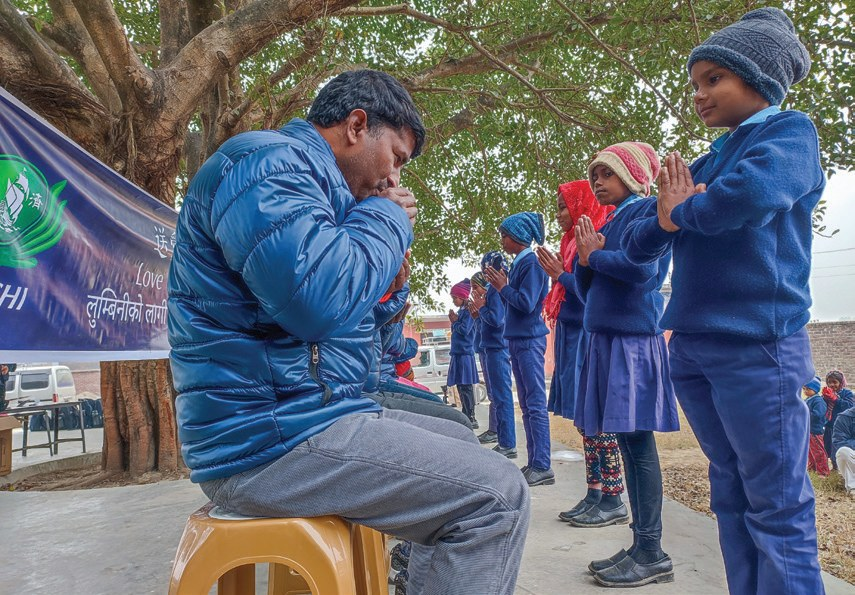
讓藍毘尼的學生向老師敬茶，表達對老師最崇高的敬意，也藉此感恩老師對教育無私的付出。

感謝老師。
還有緬甸「米撲滿」日存一把米的故事，鼓勵人人都可以翻轉手心，幫助比自己更需要的人。
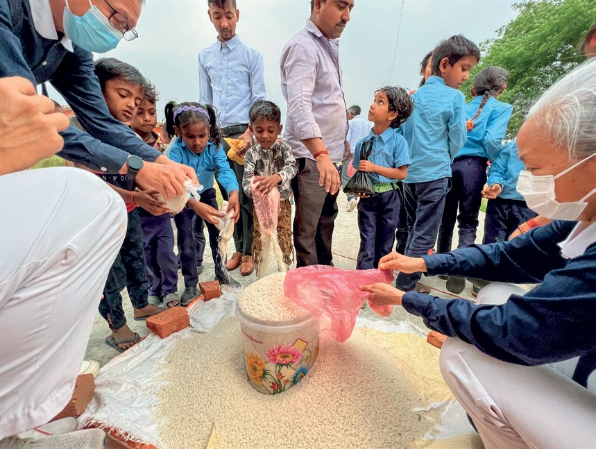
「日存一把米的行動，是一種不同的教育。當村民捐出一把米，閉上眼睛許願時，彷彿所有的困苦與問題都會消失，這樣的教育將會改變他們生活。……」
悉達多小學校長表示・p.304也能許一個願。
面對陌生的語言和歌曲，還有考驗肢體反應的手語，老師每日撥出一點時間，在教室不斷的用手機重複播放〈跪羊圖〉曲目……
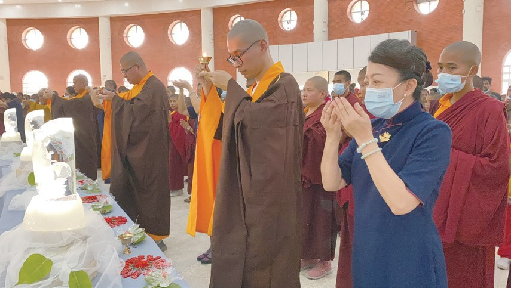
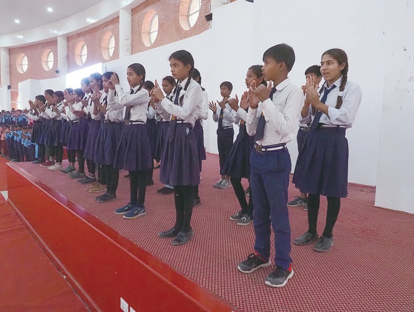
孩子學會了手語！
自從靜思語入校園，逐漸改變了學校的氛圍，孩子會主動打掃教室，撿垃圾，懂得將鞋子跟單車擺放整齊；同學之間的吵架聲減少了，彼此還會互相分享文具。
學校將打罵的教育改成感恩、尊重、愛，改善了師生關係，讓孩子重新愛上上學。

孩子重新愛上學校！
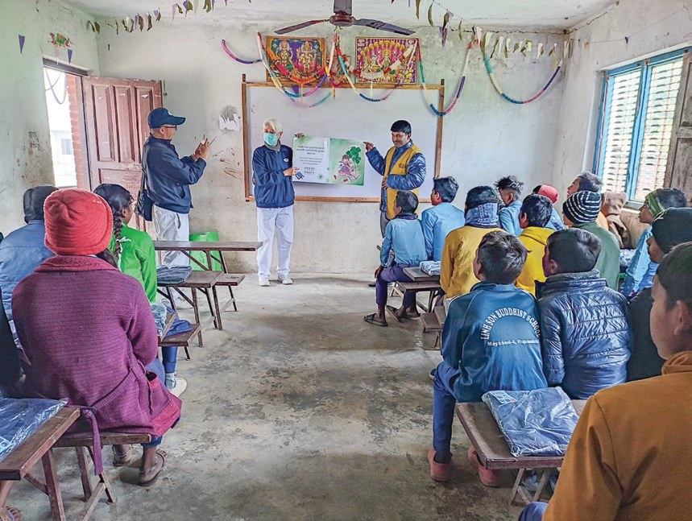
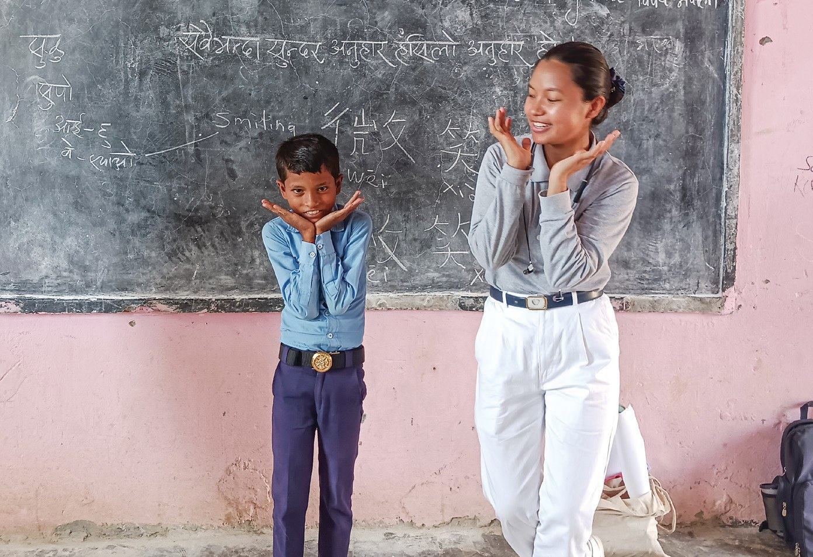
老師心、菩薩心
語言不通，志工怎樣在藍毘尼長久做下去？閱讀引導
當地講的是尼泊爾方言，有的鄉親甚至連尼泊爾語也不通，而志工說的是華語、英語，如果沒有本土志工的幫助，他們也難以推動慈濟志業。
怎樣推動呢？
舉辦了兩場「師資培訓」，共有九十九位老師參與……
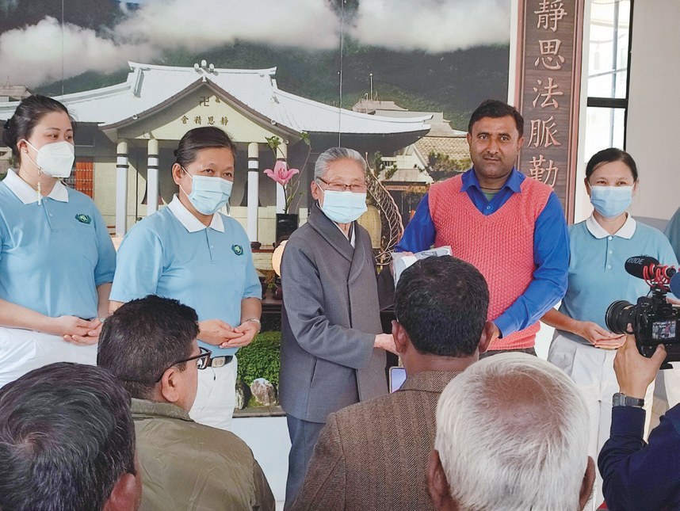
2023年3月8日的校長聯誼會，有十七位校長，跟三位副校長，以及多位教師前來參加，他們穿上教聯會的制服，承擔起「老師心、菩薩心」的責任跟使命……
藍毘尼的悉達多學校，原以破舊的鐵皮屋頂建築為教室，慈濟擬援建千年不倒的希望工程學校。
要建成希望工程！
2026年，藍毘尼的慈濟教育走到哪裡了？
師父輕輕地說，你們重重地聽入心，步步踏實，就往回饋佛陀故鄉去實踐……
上人感恩・p.309停一停：誰讓你記住了？閱讀引導
選一位你印象最深的人。沒有標準答案。
有人重返校園，有人推動米撲滿，有人天天放手機教手語。哪一位讓你最有感覺？

一起回頭看看吧～
回望
依本章原文整理，每一條都標了原書頁碼。閱讀引導
背後原因
為什麼從教育著手

小川送物資不就好了嗎？
- 被迫輟學
每三個孩子之中，就有兩位被迫離開校園。p.301
- 零輟學計劃
家訪說明補助，爭取孩子重返校園。p.301
- 教育不能等
教育能讓藍毘尼孩子增加選擇的機會。p.302
後續發展
走進藍毘尼

小禾不到一年，志工做了哪些事？
- 2022.7
雪隆志工走進藍毘尼付出。p.299
- 2022.11
一場義診，找到一群本土人才。p.308
- 2023.1
與二十八所公立學校結下好因緣。p.300
- 2023.2.20
藍毘尼教聯會正式成立。p.308–309
- 2023.3.8
十七位校長參加校長聯誼會。p.309
- 2023.5.14
首次在國際會議中心舉辦浴佛典禮。p.305
學校的改變
以前和後來
小川志工走進校園後，有什麼不同？
- 赤腳、拎塑膠袋上學發放書包、冬衣、鞋襪p.299–300
- 用手抓食物吃飯前洗手、改用湯匙p.303–304
- 打罵的教育感恩、尊重、愛p.307
- 同學之間吵架互相分享文具p.307
以上只整理本章寫到的事；書裡沒寫到的，我們不替它下結論。
回頭看讀前的選擇閱讀引導
志工先發書包、冬衣（p.300），再透過零輟學計劃讓孩子重返校園（p.301）；最後是當地老師加入教聯會（p.309）。物資、教育、本土志工，一步接一步。
為什麼校長說它「會改變他們生活」？
只有你自己看得到喔！
準備好了就一起出發～